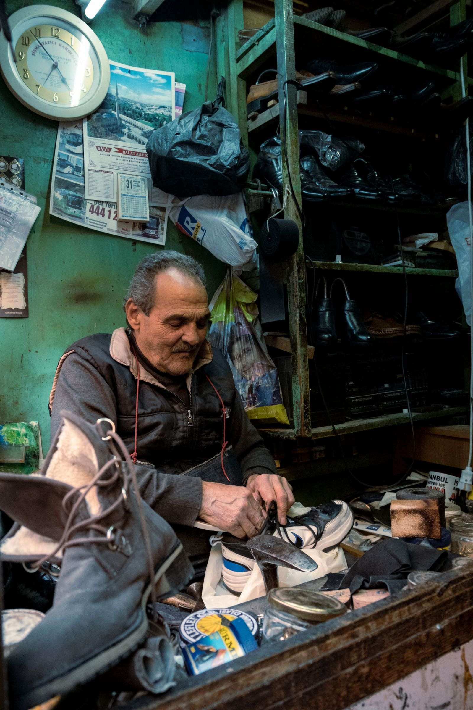
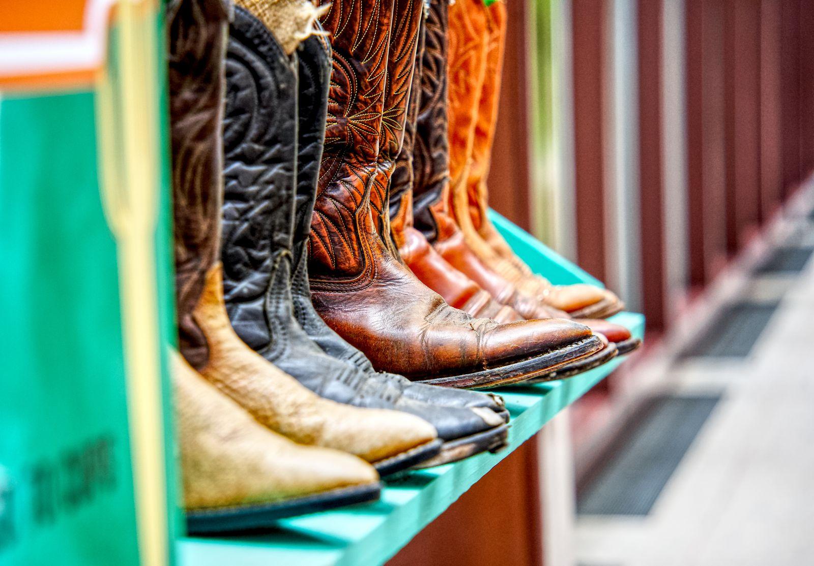

Shoe repair shop · 1110 E 24th St, Bryan, TX
Shoes and boots,
made right again.
Sam's Shoe Service has been repairing, resoling, and restoring footwear in Bryan for 47 years. Two generations, one counter, one standard of work.
1110 E 24th St, Bryan, TX 77803

In 2025, the Brazos County Historical Commission named Sam's Shoe Service a Texas Treasure Business — a program recognizing the state's longest-standing, well-established businesses.
Source: the business's own Facebook posts covering the award presentation, cross-checked via public web search Sept. 21, 2026. Not independently verified with the Historical Commission itself.
What we do
Full-service shoe repair, sales & alterations
Sam's own Facebook page describes the shop as "full service shoe store for fitting, sales, repairs and alterations" — the categories below are typical examples of what a full-service shop like this handles, not a confirmed price list. Call and ask about your specific pair.
-
Resoling & Heel Repair
New soles and heels for boots and shoes worn down from daily wear.
-
Boot Restoration
Cleaning, conditioning, and refinishing to bring tired leather boots back.
-
Dyeing & Repainting
Color restoration and refinishing for scuffed or faded leather.
-
Purse & Bag Repair
Stitching, strap, and hardware repair for leather bags and purses.
-
Alterations
Fit and sizing adjustments to footwear and leather goods.
-
Shoe Shines
Same-day shines to have a pair looking sharp again fast.
Service list above is built from the shop's own Facebook description plus common shoe-repair-trade services — confirm exactly what Sam's can do with your pair by calling (979) 779-0445.
Our story
Two generations at the same bench
Sam's has been part of Bryan's East 24th Street corridor for nearly half a century — long enough to become the kind of shop neighbors just call "Sam's," and to earn a state heritage award for it.
-
1979Sam's Shoe Service opens its doors in Bryan, Texas.
-
Two generationsThe shop's own Facebook page describes "two generations of experience" behind the counter.
-
2025Recognized as a Texas Treasure Business by the Brazos County Historical Commission.
-
Today47 years in, still repairing the shoes and boots of Bryan-College Station — rated 4.9 stars on Google.

Find us & hours
On East 24th Street in Bryan
Find us
No independent website is listed for Sam's Shoe Service — its Google Business Profile and Facebook page are the only real links, both verified Sept. 21, 2026.
Only "Opens 9 AM Tuesday" is published on Sam's Google Business Profile as of Sept. 21, 2026 — the rest of the week is unconfirmed. A quick call is the surest way to catch them open.
Customer reviews
Real reviews from real customers
Google reviews will appear here once connected. We'll display exactly what customers have said — nothing invented, nothing edited.
Google reviews will appear here once connected.
See us on GoogleAs shown on Sam's Shoe Service's public Google Business Profile — verified Sept. 21, 2026.
Bring your pair by
Call ahead or just stop in on East 24th Street. Two generations of shoe and boot repair, right here in Bryan.